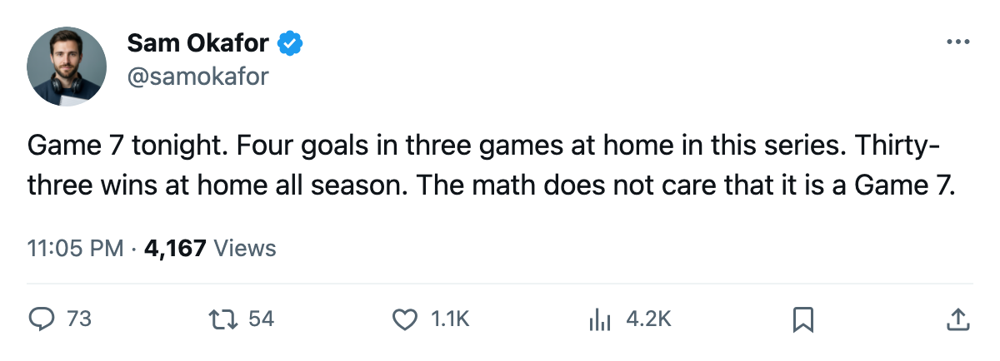

Series 3-3, Game 7 at home, and 4 goals in 3 tries on this ice
The Leafs hold a 33-8 home record and a 7-2-1 season series. They have scored 4 times in 3 games at the Air Canada Centre this spring.

The  Toronto Maple Leafs and
Toronto Maple Leafs and  Pittsburgh Penguins meet tonight at the Air Canada Centre with the series tied 3-3. The winner plays
Pittsburgh Penguins meet tonight at the Air Canada Centre with the series tied 3-3. The winner plays  Washington Capitals in the Conference Final, which opens 2005-05-06.
Washington Capitals in the Conference Final, which opens 2005-05-06.
Toronto finished 33-8 at home this season. In this series, the Leafs have gone 1-2 at the Air Canada Centre, scoring 1 goal in Game 1, 3 in Game 2, and 0 in Game 5. The 4 goals in 3 home games is the number that has kept the series alive for Pittsburgh.
The gap that Gaborik leaves
 Marian Gaborik98 is out with an ankle injury. His return date is 2005-06-02, well past any Game 7. He carried 4 goals and 6 assists in 8 playoff games before going down after Game 4. In the two games since, Toronto has managed 2 goals.
Marian Gaborik98 is out with an ankle injury. His return date is 2005-06-02, well past any Game 7. He carried 4 goals and 6 assists in 8 playoff games before going down after Game 4. In the two games since, Toronto has managed 2 goals.
 Alexander Mogilny90 (return date 2005-05-05) dressed in the lineup and sits L1RW beside
Alexander Mogilny90 (return date 2005-05-05) dressed in the lineup and sits L1RW beside  Mats Sundin91 and
Mats Sundin91 and  Gary Roberts88. That top line has produced 17 of the team's 14 playoff goals (Sundin 8, Roberts 11, Mogilny 6); the rest of the roster has 4 goals and 2 assists across 11 games.
Gary Roberts88. That top line has produced 17 of the team's 14 playoff goals (Sundin 8, Roberts 11, Mogilny 6); the rest of the roster has 4 goals and 2 assists across 11 games.
The goaltending edge
 Roberto Luongo94 is 7-4 with a 1.99 GAA and .945 save percentage this spring.
Roberto Luongo94 is 7-4 with a 1.99 GAA and .945 save percentage this spring.  Johan Hedberg87 has been Pittsburgh's starter at 6-5, 2.08, .907. Sebastien Caron79 got one start, a Game 5 shutout at Toronto, 1.00 GAA and .952.
Johan Hedberg87 has been Pittsburgh's starter at 6-5, 2.08, .907. Sebastien Caron79 got one start, a Game 5 shutout at Toronto, 1.00 GAA and .952.
| TOR | PIT | |
|---|---|---|
| Series GF | 14 | 15 |
| Home GF (this series) | 4 in 3 | 8 in 3 |
| Season home record | 33-8 | 19-22 |
| Goaltender GAA | 1.99 | 2.08 |
What the regular season said
Toronto went 7-2-1 against Pittsburgh, outscoring them 34-24. The Leafs won 4 straight from 2005-04-24 through 2005-04-28 before Tuesday's 2-3 overtime loss. Pittsburgh entered the playoffs as the 7 seed with 85 points. Toronto had 133.
 Rick Nash83 sits +5 on the Bureau's Development Index, and
Rick Nash83 sits +5 on the Bureau's Development Index, and  Brad Richards87 is +4. Neither has a goal in the spring. Nash carries 39 points in 69 regular-season games; Richards has 66 in 80. Tonight they need to find the net on home ice.
Brad Richards87 is +4. Neither has a goal in the spring. Nash carries 39 points in 69 regular-season games; Richards has 66 in 80. Tonight they need to find the net on home ice.
